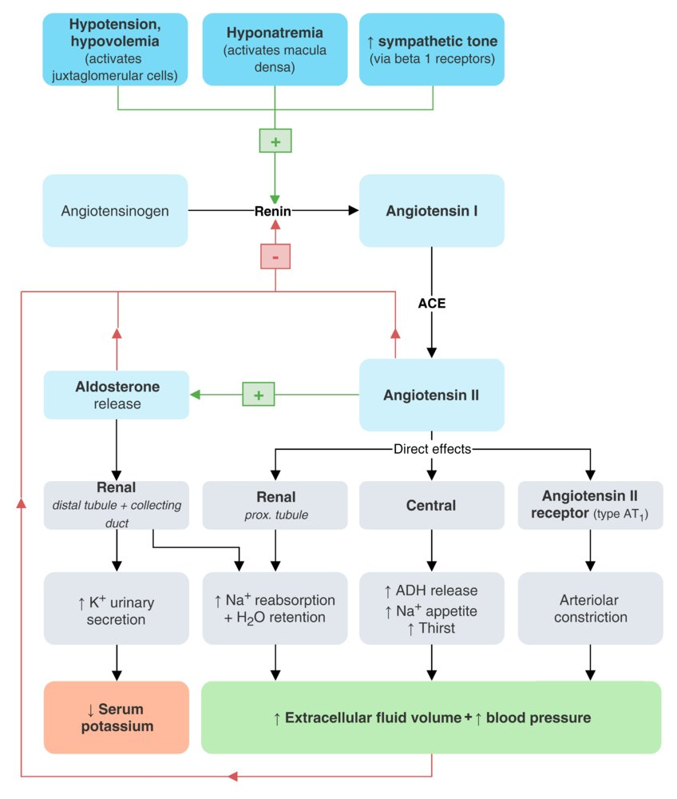

<div id="info" class="text"></div>

<div id="wrapper"><span class="label">Renal</span>
  <div class="branch lv1">

    <div class="entry"><span class="label" id="diuretic"><a>Diuretics</a></span>
      <div class="branch lv2">
        <div class="entry"><span class="label" id="osmotic"><a>Osmotic diuretic</a></span>
        </div>
        <div class="entry"><span class="label" id="acetazolamide"><a>Acetazolamide</a></span>
        </div>
        <div class="entry"><span class="label" id="loop"><a>Loop diuretics</a></span>
        </div>
        <div class="entry"><span class="label" id="thi"><a>Thiazide diuretics</a></span>
        </div>
        <div class="entry"><span class="label" id="kspare"><a>Potassium-sparing diuretics</a></span>
        </div>
      </div>
    </div>

      <div class="entry"><span class="label" id="raas"><a>RAAS</a></span>
        <div class="branch lv2">
          <div class="entry"><span class="label" id="ace"><a>ACE-inhibitors</a></span>
          </div>
          <div class="entry"><span class="label" id="arb"><a>ARBs</a></span>
          </div>
          <div class="entry"><span class="label" id="aliskiren"><a>Aliskiren</a></span>
          </div>
        </div>
      </div>

  </div>
</div>

<script>
  var display = document.getElementById('info');

  ace.addEventListener('click', function(){ display.innerHTML = "<ul><li>-prils</li><li>inhibition of ACE(converts AT1 to AT2)</li><li>decreased AT2 levels reduces peripheral resistance and afterload</li><li>decreased aldosterone decreases salt and water retention which reduces preload</li><li>decreased breakdown of bradykinin results in increased kinin activity and vasodilation</li><li>net result is decreased BP</li><li>side effect: cough due to elevated bradykinin</li></ul>";}, false);
  arb.addEventListener('click', function(){ display.innerHTML = "<ul><li>-sartans</li><li>inhibition of AT2 receptor type 1</li><li>decreased vasoconstriction leads to decreased BP</li><li>decreased aldosterone secretion decreases Na and water reabsorption which lowers BP</li><li>no bradykinin elevation(unlike ACE-i)</li></ul>";}, false);
  diuretic.addEventListener('click', function(){ display.innerHTML = "<ul><li>increase the production of urine</li><li>categorized according to renal structures they act on, changes in volume/composition of urine, and electrolyte balance</li></ul>";}, false);
  thi.addEventListener('click', function(){ display.innerHTML = "<ul><li>inhibit Na+Cl- cotransports in DCT increasing excretion of Na+ and Cl- and causing diuresis</li><li>Hydrochlorothiazide, chlorothiazide, metolazone</li></ul>";}, false);
  loop.addEventListener('click', function(){ display.innerHTML = "<ul><li>block Na+K+2Cl- cotransporter on thick ascending loop of Henle -> dimishing concentration gradient between renal medulla and cortex -> not able to concentrate urine -> increased diuresis</li><li>Sulfonamides: furosemide, torsemide, bumetanide</li><li>non-sulfur containing: ethacrynic acid</li></ul>";}, false);
  kspare.addEventListener('click', function(){ display.innerHTML = "<ul><li>cause diuresis without potassium loss</li></ul>";}, false);

  osmotic.addEventListener('click', function(){ display.innerHTML = "<ul><li>inhibit water reabsorption at PCT, thin descending, collecting duct</li><li>mannitol</li></ul>";}, false);
  acetazolamide.addEventListener('click', function(){ display.innerHTML = "<ul><li>inhibit carbonic anhydrase -> increase H+ reabsorption and inhibit Na+/H+ exchange -> increase bicarb elimination -> compensatory hyperventilation -> raise oxygenation</li><li>acetazolamide</li></ul>";}, false);
  aliskiren.addEventListener('click', function(){ display.innerHTML = "<ul><li>direct renin inhibitor, blocks conversion of angiotensinogen to angiotensin 1</li><li>indication: hypertension</li></ul>";}, false);

  raas.addEventListener('click', function(){ display.innerHTML = "";}, false);

</script>


<style>
.text{
  float: right;
  width: 500px;
}
a:hover {
        color: #ff0000;
        cursor: pointer;
    }

*,
*:before,
*:after {
  -webkit-box-sizing: border-box;
  -moz-box-sizing: border-box;
  box-sizing: border-box;
}
body {
  min-width: 1200px;
  margin: 0;
  padding: 50px;
  color: black;
  font: 16px Verdana, sans-serif;
  background: white;
  -webkit-user-select: none;
  -moz-user-select: none;
  -ms-user-select: none;
  user-select: none;
}
#wrapper {
  position: relative;
}
.branch {
  position: relative;
  margin-left: 250px;
}
.branch:before {
  content: "";
  width: 50px;
  border-top: 2px solid #000;
  position: absolute;
  left: -100px;
  top: 50%;
  margin-top: 1px;
}
.entry {
  position: relative;
  min-height: 60px;
}
.entry:before {
  content: "";
  height: 100%;
  border-left: 2px solid #000;
  position: absolute;
  left: -50px;
}
.entry:after {
  content: "";
  width: 50px;
  border-top: 2px solid #000;
  position: absolute;
  left: -50px;
  top: 50%;
  margin-top: 1px;
}
.entry:first-child:before {
  width: 10px;
  height: 50%;
  top: 50%;
  margin-top: 2px;
  border-radius: 10px 0 0 0;
}
.entry:first-child:after {
  height: 10px;
  border-radius: 10px 0 0 0;
}
.entry:last-child:before {
  width: 10px;
  height: 50%;
  border-radius: 0 0 0 10px;
}
.entry:last-child:after {
  height: 10px;
  border-top: none;
  border-bottom: 2px solid #000;
  border-radius: 0 0 0 10px;
  margin-top: -9px;
}
.entry.sole:before {
  display: none;
}
.entry.sole:after {
  width: 50px;
  height: 0;
  margin-top: 1px;
  border-radius: 0;
}
.label {
  display: block;
  min-width: 150px;
  padding: 5px 10px;
  line-height: 20px;
  text-align: center;
  border: 2px solid #000;
  border-radius: 5px;
  position: absolute;
  left: 0;
  top: 50%;
  margin-top: -15px;
}
</style>
